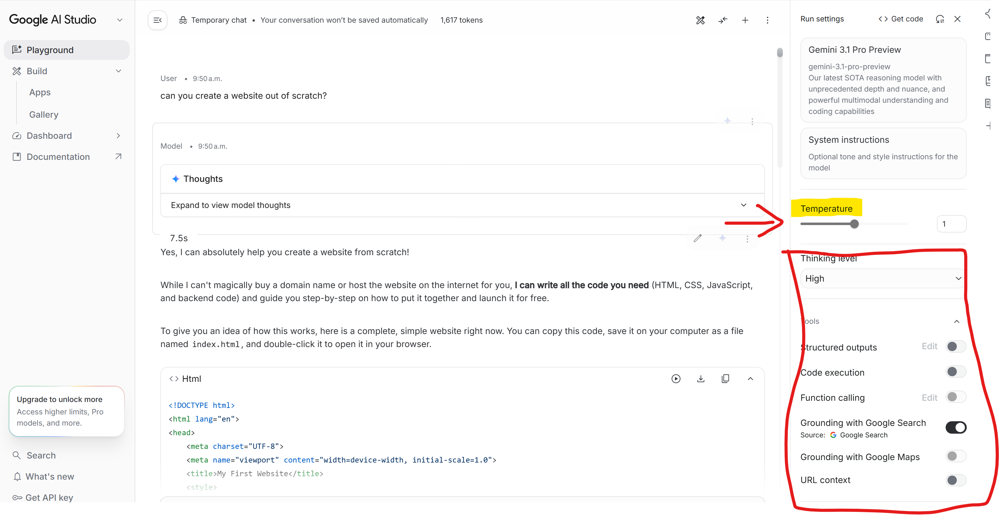

Ingeniería de prompts
Replicabilidad y control en la respuesta
Cuando lanzas el mismo prompt dos veces, el modelo no da exactamente la misma respuesta. Esto no es un fallo: es una decisión de diseño. Los LLMs tienen parámetros que controlan cuánta variabilidad hay en sus respuestas, y entenderlos te permite decidir cuándo quieres creatividad y cuándo quieres consistencia. Esto lo hacen a través de dos parámetros:
- La temperatura, que controla cuánta aleatoriedad introduce el modelo al elegir la siguiente palabra.

| Temperatura | Comportamiento | Cuándo usarla |
|---|---|---|
| 0.0 - 0.3 | Prácticamente determinista. Ante el mismo prompt en condiciones idénticas, el modelo tenderá a dar la misma respuesta. | Útil para extracción de datos, terminología, traducciones o tareas que deban replicarse. Limitada si queremos hacer brainstorming o queremos que sea ‘creativo’ en su respuesta. |
| 0.4 - 0.7 | Equilibrio entre coherencia y variedad. La probabilidad permite más variabilidad en la respuesta, dando respuestas más diversas, pero controlando la probabilidad de respuesta aún | Útil para redacciones, análisis o explicaciones para el usuario |
| 0.8 - 1.0 | Más creativa, menos predecible, más probabilidad de alucinación, ya que hay mayor aletoriedad en las respuestas que da, incluyendo texto plausible aunque no necesariamente correcto. | Útil para hacer brainstorming, pelotear ideas o redactar textos creativos |
El top-p o nucelus sampling, que trabaja de forma complementaria a la temperatura. En lugar de controlar cuánta aleatoriedad hay en general, controla el tamaño del conjunto de palabras entre las que el modelo puede elegir.
Imagínate que le damos un valor de
top-p = 0.1, el modelo solo considera las palabras que juntas acumulan el 10% de probabilidad: es decir, sólo las más probables. Contop-p = 0.9, considera un conjunto mucho más amplio de palabras posibles.
En la práctica, temperatura y top-p actúan juntos. La mayoría de herramientas de uso general como Gemini no exponen estos parámetros directamente, pero AI Studio sí permite ajustarlos, lo que te da control total sobre el comportamiento del modelo.
No puedes cambiar la temperatura directamente desde la interfaz de un chatbot. Normalmente esto se hace cuando uno se conecta a estos sistemas a través de una API. Sin embargo, puedes conseguir un efecto similar instruyendo al modelo en el propio prompt:
- “Dame siempre la misma respuesta para este tipo de consulta” → empuja hacia consistencia
- “Dame cinco opciones muy distintas entre sí” → empuja hacia variedad
No es lo mismo que controlar el parámetro directamente, pero puede funcionar para la mayoría de casos.
Una API (Application Programming Interface) es una forma de comunicarse con un programa sin necesidad de usar su interfaz visual. Cuando usas ChatGPT a través del navegador, interactúas con una interfaz diseñada para humanos. Cuando accedes a través de la API, le mandas instrucciones directamente en forma de código y recibes la respuesta también en código, sin pantallas ni botones de por medio.
Esto es importante porque a partir de las APIs podemos integrar un LLM dentro de otras herramientas: un gestor de traducciones, una hoja de cálculo, un flujo de trabajo automatizado. En lugar de abrir el chat y copiar y pegar, el programa habla directamente con el modelo y procesa los resultados automáticamente.
Tipos de prompts
Un prompt no es solo una pregunta. Según cómo lo construyas, el modelo activará estrategias de respuesta muy distintas. Conocer estas técnicas te permite elegir la más adecuada para cada tarea en lugar de improvisar cada vez.
Zero-shot prompting
Le pides al modelo que haga algo sin darle ningún ejemplo ni contexto adicional. Es el punto de partida más simple y funciona bien para tareas directas y bien definidas.
Traduce el siguiente término jurídico al inglés británico:
"resolver el contrato de pleno derecho"Cuándo funciona bien: consultas terminológicas directas, preguntas factuales, tareas con un output muy claro.
Cuándo falla: cuando la tarea requiere un formato muy específico, cuando el dominio es muy especializado o cuando necesitas que el modelo adopte un criterio concreto que no está en su entrenamiento general.
Few-shot prompting
Antes de pedir la tarea, le muestras al modelo uno o varios ejemplos del output que esperas. El modelo aprende el patrón de tus ejemplos y lo replica.
Aquí tienes ejemplos de cómo quiero que presentes las entradas del glosario:
Término: despechá
Categoría: andalucismo / apócope
Definición: forma apocopada de "despechada", con elisión de la -d-
intervocálica característica del habla andaluza
Reto de traducción: la apócope es intraducible fonéticamente en inglés;
se pierde el marcador dialectal
Propuesta: "done with you" (pérdida del rasgo dialectal aceptada)
Ahora haz lo mismo con estos términos: [lista de términos]Cuándo funciona bien: cuando necesitas un formato de salida exacto y consistente, cuando construyes un glosario o tabla con estructura definida, cuando el zero-shot te da respuestas correctas pero mal formateadas.
Cuándo falla: si los ejemplos que das tienen inconsistencias, el modelo las replica. Basura entra, basura sale.
Chain-of-Thought (CoT) prompting
Le pides al modelo que razone paso a paso antes de dar la respuesta final. Esto mejora significativamente los resultados en tareas que requieren análisis, comparación o justificación. Sería una forma artificial de obligar al modelo a que razone o piense.
Analiza si el término "motomami" tiene equivalente en inglés.
Razona tu respuesta siguiendo estos pasos:
primero explica qué significa el término y de dónde viene,
luego evalúa si existe un concepto equivalente en la cultura anglófona,
y finalmente propón la estrategia de traducción más adecuada
justificando tu elección.Cuándo funciona bien: análisis de equivalencias complejas, justificación de decisiones traductológicas, evaluación de opciones cuando no hay una respuesta única correcta.
Cuándo falla: para tareas simples y directas es innecesario y hace las respuestas más largas sin añadir valor. Si le pides que razone por qué “cat” se traduce como “gato”, el resultado es ridículo.
Role prompting
Le asignas al modelo un rol específico para que ajuste su base de conocimiento, su tono y sus criterios al perfil que necesitas.
Eres un traductor especializado en música urbana hispanohablante
con experiencia en localización cultural para el mercado anglosajón.
Tu criterio prioritario es preservar el impacto cultural del texto
aunque eso implique pérdidas formales. Con ese criterio,
propón una traducción al inglés de esta estrofa de Bad Bunny: [estrofa]Cuándo funciona bien: cuando necesitas que el modelo adopte un criterio profesional específico, cuando quieres simular la perspectiva de un revisor, un cliente o un experto en un dominio concreto.
Cuándo falla: el modelo acepta el rol pero no siempre lo mantiene de forma consistente a lo largo de una conversación larga. Conviene recordárselo si la sesión se extiende.
Combinando técnicas
Las técnicas anteriores no son excluyentes. En la práctica, los prompts más efectivos combinan varias:
[Role] Eres un terminólogo especializado en música urbana.
[CoT] Analiza el término "perreo" siguiendo estos pasos:
origen, connotaciones culturales, registro, presencia en otras lenguas.
[Few-shot] Presenta el resultado en este formato:
Término: [término]
Origen: [origen]
Connotaciones: [connotaciones]
Registro: [registro]
Equivalente propuesto: [equivalente]
Estrategia: [estrategia de traducción]
[Zero-shot para el contenido] Ahora aplica este análisis a:
perreo, flow, jangueoLa técnica de prompting no determina la calidad del resultado por sí sola. Un few-shot con ejemplos malos produce outputs malos con mucha consistencia. Un role prompt con un rol mal definido produce respuestas genéricas con apariencia de especialización. La técnica es el vehículo: el criterio es tuyo.